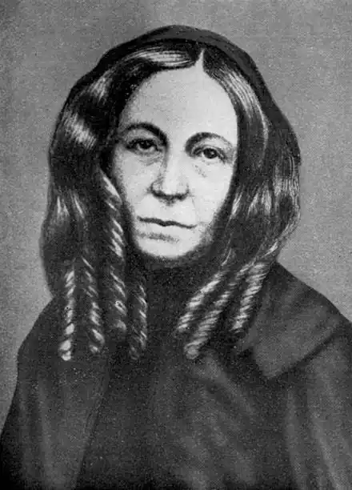

Її найвідоміша книга, це "Сонети з португальської" (1850), була заснована на її власної історії кохання.
Тонко відчуває і рано розвинувся дитина, вона провела більшу частину своєї молодості в стані полуинвалидности. Вона читала філософію, історію, літературу і писала вірші. У 1838 році сімейство Барретт переїхало на вулицю Сант Уимпол, в Лондон. Шість років потому Елізабет видала книгу "Поеми", яка швидко принесла їй популярність. Книга стала улюбленою за це Робертом Браунінгом, і він почав листуватися з Елізабет. Вони полюбили один одного, але з-за тиранічного характеру батька він зустрічалися таємно.
Вони одружилися в 1846 році і поїхали в Італію, де провели більшість їх шлюбного життя і де народився їх син. Пані Браунінг зацікавилася причиною італійського звільнення від Австрії. "Каса Гвіді", ихдом у Флоренції, досі збережений як меморіал. Щаслива в шлюбі Елізабет продовжувала в Італії сові роботу. Її найвідоміша книга, це "Сонети з португальської" (1850), була заснована на її власної історії кохання. "Вікна палацу Гвіді" (1851) написані про італійському звільнення, а "Аврора" (1857), роман написаний у віршах. Протягом всього її життя Елізабет Браунінг вважалася більш сильним поетом, ніж її чоловік. Сьогодні ж її життям і особистістю цікавляться набагато більше, ніж її творчістю. Незважаючи на те, що її часто критикували за педантизм і сентиментальність, в таких творах, як "Плач Дітей" та "Сонети з португальської" вона показує високу індивідуальність і ліричний характер.